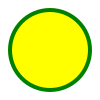

<!--

    SVG

    É uma marcação, estilo html, mas não é para textos, e sim para fazer imagens.
    Possuimos elementos para gerar formas

    Pata entendre melhor
    - Imagem rasterizada x Imagem vetorizadas

    Benefífioc (vetorizadas)
    - Mais leve
    - Mais detalhada
    - Maior acessibilidade e seo
    - Pode ser editada via css ou atributos

    Desvantagens ( vetorizadas )
    - Pod ser mais complicado de trabalhar
    - Quanto mais complexa a imagem, mais trabalho para o navegador
    - Navegadores mais antigo não possuem suporte a essa tag

    Para fotografias, ainda prefira usar imagens rasterizadas.
-->


<svg width="200" height="200">
    <circle cx="100" cy="100" r="80" stroke="red" stroke-width="6" fill="blue"></circle>
</svg>

<svg width="300" height="200">
    <rect stroke="blue" stroke-width="4" width="100%" height="100%" fill="green"/>
</svg>